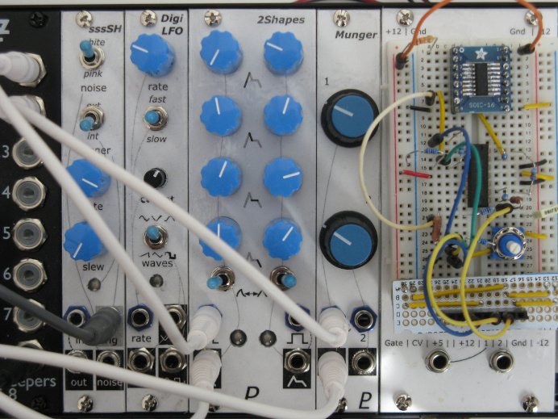

My Eurorack modular synthesizer designs are shared in this GitHub repository.
Please note that I am a hobbyist, not a trained electronics engineer! These designs are not perfect. The modules work for me, but I can’t promise they’ll work for everyone who builds them.
These designs are shared as open source. See the license details in each project and source file.
— Len
General Info
- Front Panels
- How I make the front panels for my modules
- Component Selection
- Some notes on which parts to use when building these modules
- Eurorack Bus CV and Gate
- Spaghetti reduction
- Firmware Programming
- How to program the firmware onto the microcontrollers in some modules
- Discussions
- Forum for questions, comments, and conversations
Modules
These are the modules that I have built.
- Dexy
- DX7-inspired FM synthesis with a Raspberry Pi Pico
- Filter2
- Dual filter module
- Switches
- 4-channel muting module
- VCF-SV
- State-variable filter module
- Adder
- Unity-gain mixer / precision adder
- FX
- Digital effects module
- Attenuverter
- Dual attenuverter module
- VCF-4P
- 4-pole lowpass filter module
- Mixer1
- Small mixer module
- Mixer2
- Dual mixer module
- Buff-Mult
- Buffered multiples
- Bus-Driver
- Driver module for Eurorack bus CV & gate signals
- VCA-4
- Quad exponential VCA
- Audiout
- Audio output module
- VCO-2131
- Analog VCO based on the SSI2131 chip
- Envelope2
- Dual ADSR envelope module, microcontroller-based
- Wavefolder
- Dual analog wavefolder module
- LFO-DigiVC
- Voltage-controlled LFO, microcontroller-based
- Noise-SH
- Noise, sample-and-hold, and trigger clock, all in one module
Not Modules
- Power-Supply
- Eurorack power supply using a laptop charger
- Cable Hanger
- Simple desk-mounted patch cable rack